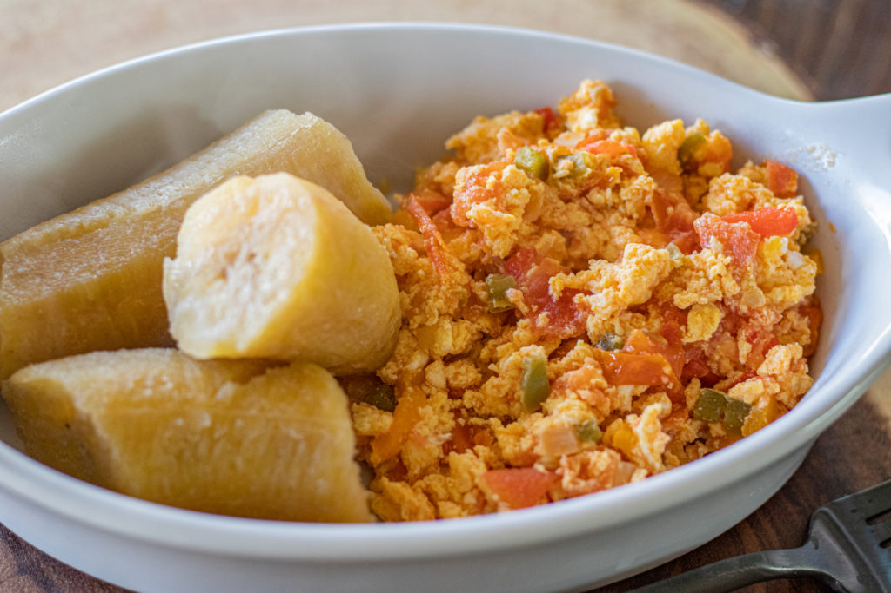

Plaintains with Scrambled Eggs

Description
This dish can be eaten for breakfast or lunch and you can switch up the vegetables you use to your liking.
Ingredients
4 large eggs
2 Plantains (Semi ripe)
1/2 cup of Diced Onions
1/2 cup of Diced Green Peppers
1/2 Cup of Diced Tomatoes
1 tsp of diced Scotch Bonnet Pepper
1 Tbs Olive Oil
1tsp of Salt
1 tsp of Adobo All seasoning
1tsp black pepper
Steps
- In a 1 quart pot add 2 cups of water, 1 tsp Salt and bring to boil.
- Add the cut the small ends of the plantains, cut it in half, and add it to the boiling water with the peel for about 15 min.
*Note if you boil it without peel you may get mush.
- Crack the eggs open in a bowl. Add 1tsp of Adobo All Season,
tsp salt, 1tsp pepper and mix thoroughly.
- In a large frying pan saute' the diced onions, peppers, tomato,
and Scoth Bonnet pepper for about 5 min.
- Add the eggs and scramble for about 5- 10 min.
- Remove the peel from the plantain and
serve with the eggs.
back to home